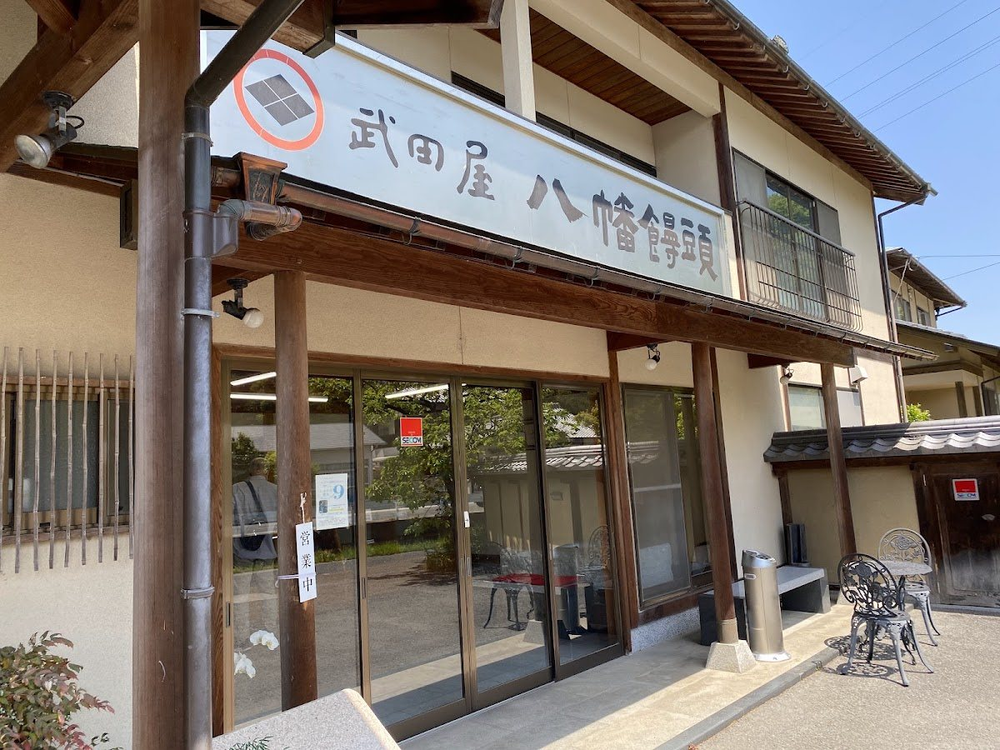

ABOUT
玉川名物は、いまや今治名物。
八幡饅頭の歴史と、武田屋の歩み

八幡饅頭は、今治市玉川町の八幡地区に古くから伝わるお饅頭です。 江戸時代が終わって職を失った武士たちが、この地方一帯でつくりはじめ—— やがて長く受け継がれ、現在も製造販売をつづけているのは武田屋一軒のみとなりました。
名前の「八幡」は、お店のあるこの土地の名から。四国八十八ヶ所の57番札所・栄福寺から 58番仙遊寺へ向かう遍路道の途中にあり、昔から歩きお遍路さんが立ち寄って ひと息ついていく場所でもあります。
黒糖の風味と、日がたってもかたくなりにくい生地。
蒸したての八幡饅頭は、また格別です。